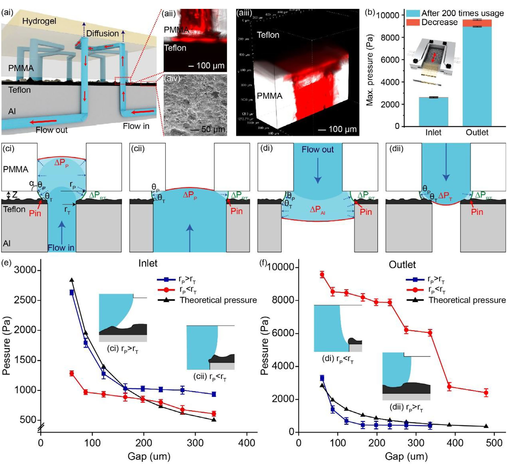
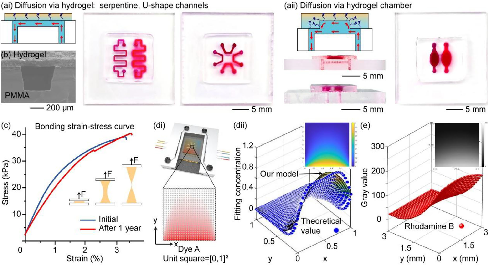

Institute R&D / Microfluidic Instrumentation
Microfluidic Equipment
& Automated Microscopy
Iterated incubation and imaging hardware,
building image-driven MIC boundary search.

Engineering Task
Develop supporting instrumentation for rapid hydrogel-chip Antimicrobial Susceptibility Testing (AST), unifying thermal incubation, chip loading, automated microscopy, and image-driven analysis.
My Work
Developed peripheral incubation equipment, standardized chip cartridges, and automated microscopy integration; independently built image preprocessing, autofocus, and Minimum Inhibitory Concentration (MIC) boundary search software.
- Incubation hardware & standardized cartridgesMulti-generation mechanical design, supplier machining coordination, prototype assembly, and testing.
- Automated microscopy integrationCalibrated camera, optics, and motorized stage alignment to connect image capture with analysis routines.
- Image processing & MIC boundary searchIndependently implemented preprocessing, autofocus, and neural-network-assisted MIC boundary search software.
Microfluidic AST Workflow / Hardware & Image Analysis
- Thermal Incubation
- Manual Chip Transfer
- Microscopy Capture
- Preprocessing / Autofocus
- Model Inference
- Stage MIC Search
The incubation unit controls temperature and fluidic perfusion; after manual transfer, the chip enters automated microscopy and image analysis.
Delivered multi-generation incubation & imaging hardware,
closing the image-driven MIC search loop.
Completed iterative prototypes for the incubation unit, standardized cartridge, and automated microscopy platform, coupling model inference outputs to stage actuation for MIC boundary search. Related platform work was published in Small, 2026, 22(11), e06075.
Small 22(11) · 2026 · e06075Hydrogel-Chip Cartridge
& Interconnection
The published study introduces a hydrogel-plastic composite cartridge and non-contact fluidic interconnection via contact-line pinning (demonstrating a 60–600 μm chip-to-holder gap range and ~9.5 kPa static pressure tolerance), validated in rapid AST and 2D cell-culture workflows. Small is a Wiley interdisciplinary journal in materials, micro/nano engineering, and life sciences.


Paper figures reproduced under the Creative Commons Attribution 4.0 International License. View license
Instrumentation & SoftwareIncubation, Imaging & Stage Search
Unified thermal, fluidic & optical interfaces
Mapped mechanical, thermal, fluidic-pump, cartridge-seating, and motorized-stage interfaces so incubation, manual transfer, microscopy capture, and analysis operate as one cohesive workflow.
Iterated incubators, cartridges & microscopy hardware
Executed multi-generation mechanical design in SolidWorks, external machining coordination, assembly debugging, and bench testing to improve loading ergonomics, thermal uniformity, and optical focus repeatability.
Built image preprocessing, autofocus & MIC search
Independently developed Python/C++/OpenCV routines that run focal-plane search and preprocessing on captured frames, then use neural-network classification outputs to drive stage motion and locate the MIC boundary.
R&D DeliverablesHardware Iterations &
Image-Driven Search
Equipment & Imaging Integration
Developed peripheral thermal incubation units, standardized chip cartridges, and automated microscopy integration across multi-generation prototypes and interface debugging.
Image Analysis & MIC Boundary Search
Independently implemented image preprocessing, autofocus, and MIC boundary search software integrating stage actuation, tiled capture, stitching, and model inference into a closed-loop workflow.
Publication · e06075Small 22(11) · 2026
Developed peripheral thermal incubation equipment, standardized chip cartridges, and automated microscopy integration; independently built image preprocessing, autofocus, and MIC boundary search routines.
Transforming Fragile Hydrogel Chips Into Standardized Cartridges via Contact Line Pinning for Robust Microfluidics. Small 2026, 22(11), e06075.
DOI: 10.1002/smll.202506075U.S. Patent ApplicationMicrofluidic Chip &
Non-Contact Interconnect
Microfluidic Chip, Biomaterial-Plastic Composite Device Using the Same, and Non-Contact Interconnection Method Between Microfluidic Chip and Connector.
Covers hydrogel microfluidic chips, biomaterial-plastic composite devices, and non-contact interconnection between chips and connectors.
Assignees: Hong Kong Baptist University; Research Institute of Tsinghua, Pearl River Delta.